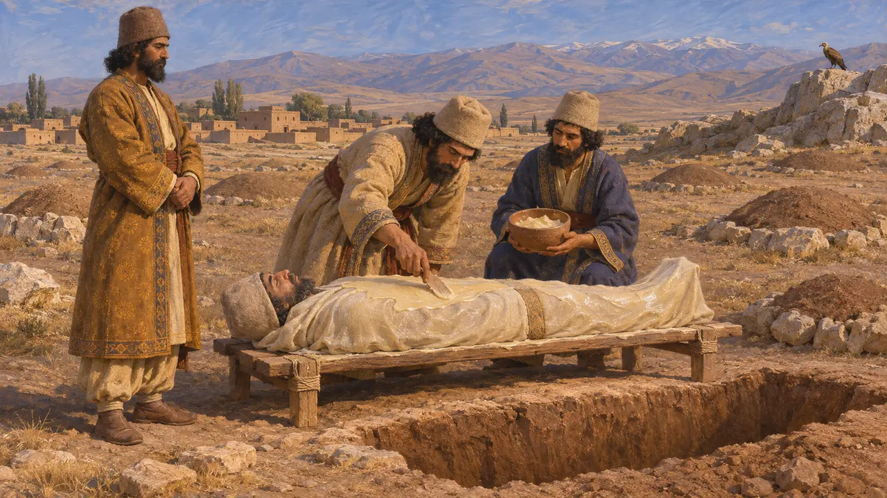
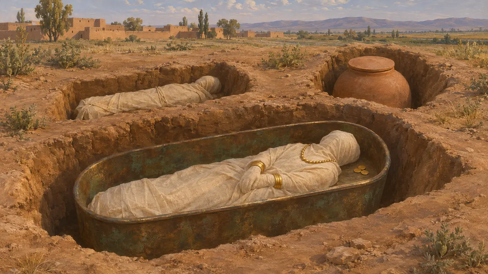
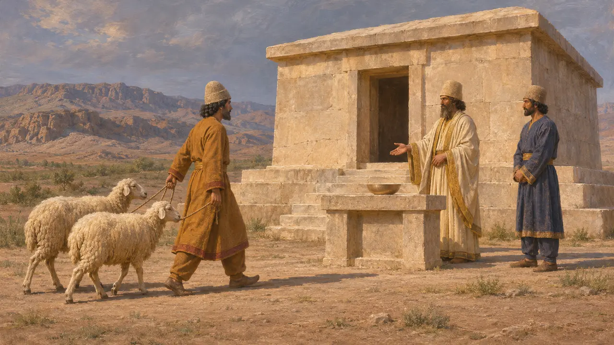
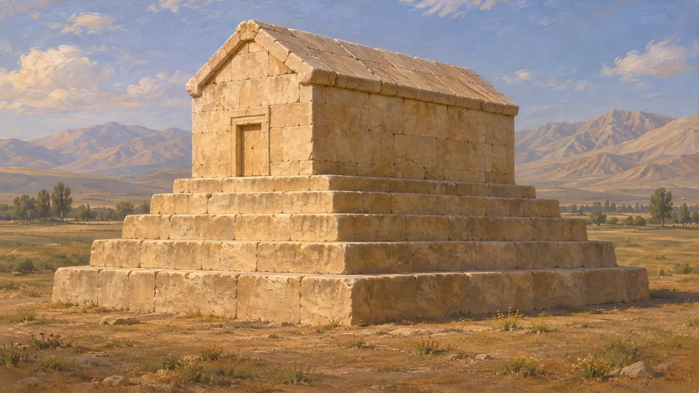
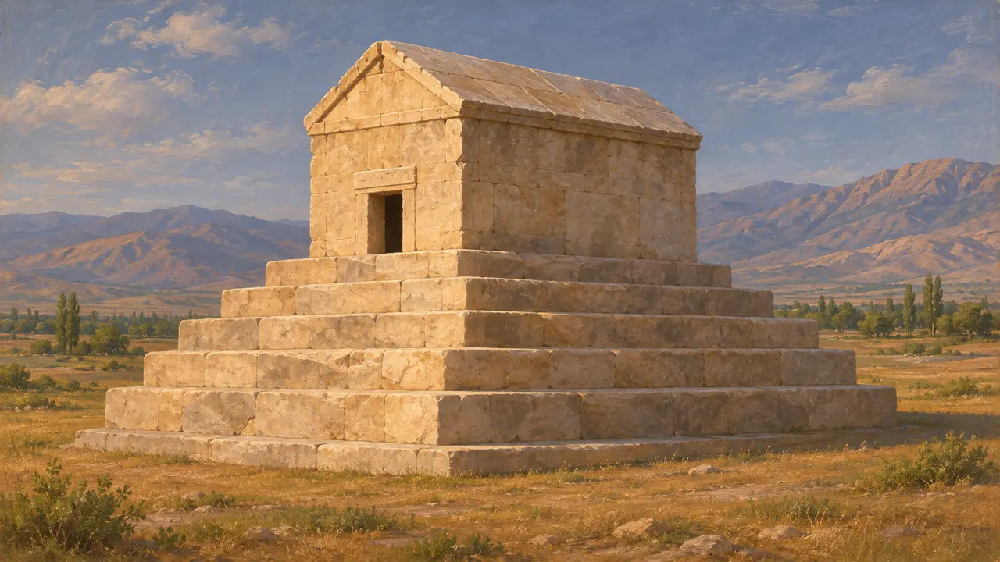

Begräbnisstätte
Gräber und Bestattungsbräuche der Perser und ihrer Untertanen, um 550–479 v. Chr.
Die meisten Menschen im Perserreich bestatteten ihre Toten in der Erde, in Gruben, Gefäßen oder Särgen, oft mit einigen persönlichen Beigaben. Herodot berichtet, die Perser hätten den Leichnam vor der Bestattung mit Wachs überzogen, während die Magier ihre Toten zuerst von Vögeln oder Hunden zerreißen ließen. Die Bestattungsbräuche zeigen sowohl, wie die Perser über den Tod dachten, als auch, wie verschieden die vielen Völker des Königs blieben.
Im Spiel: Träger bringen die Toten der Stadt zur Begräbnisstätte, und unbestattete Tote machen nahe gelegene Häuser krank. Wachs und Magier folgen Herodot, der allerdings neben Vögeln auch Hunde nennt. Die Krankheitsregel ist eine spielerische Vereinfachung.

Wachs, Erde und Aussetzung bei Herodot
Antiker BerichtHerodot berichtet, die Perser hätten einen Leichnam mit Wachs überzogen und ihn dann begraben. Er fügt hinzu, man erzähle sich halb im Geheimen, ein persischer Leichnam werde erst bestattet, nachdem ein Vogel oder Hund ihn zerrissen habe, und bei den Magiern sei er sich dessen sicher. An anderer Stelle schreibt er, die Perser verbrannten ihre Toten nicht, weil sie das Feuer für einen Gott hielten und es nicht recht sei, einem Gott einen Leichnam darzubringen.
Herodotus 1.140; Herodotus 3.16

Von Ausgräbern gefundene Gräber
Zeitgenössisch belegtAusgrabungen in Elam, Mesopotamien und der Persis haben gewöhnliche Erdbestattungen der achämenidischen Zeit freigelegt, teils in einfachen Gruben, teils in Tongefäßen oder Särgen. In Susa entdeckte die Mission von J. de Morgan 1901 eine spätachämenidische Bestattung in einem wannenförmigen Bronzesarg mit Goldschmuck und Münzen. Solche Funde zeigen, dass die Bestattung in der Erde üblich war, auch wenn sich reiche und schlichte Gräber stark unterschieden.
J. de Morgan, Mémoires de la Délégation en Perse, 1905; P. Briant, From Cyrus to Alexander, 2002

Opfergaben an Königsgräbern
Zeitgenössisch belegtElamische Täfelchen aus dem Festungsarchiv von Persepolis verzeichnen Schafe, die für Opfer am šumar von Angehörigen des Königshauses ausgegeben wurden, darunter Kambyses und Hystaspes, der Vater des Dareios. Das Wort bezeichnete wohl ein Grab oder einen Gedenkbau. Die Täfelchen zeigen, dass die Verwaltung des Königs regelmäßige Riten für die königlichen Toten bezahlte.
W. Henkelman, An Elamite memorial: the šumar of Cambyses and Hystaspes, 2003; W. Henkelman, The Other Gods Who Are, 2008

Bestattung oder Aussetzung
UmstrittenDie Historiker streiten noch immer darüber, wie verbreitet die von Herodot beschriebene Aussetzung der Toten in achämenidischer Zeit war. Die Könige wurden in geschlossenen Gräbern beigesetzt: Kyros in einem steinernen Haus in Pasargadae, Dareios und drei Nachfolger in Felsgräbern bei Naqsch-e Rostam. Das spricht dafür, dass königliche Leichname nicht unter freiem Himmel liegen blieben. Die aus späterer zoroastrischer Praxis bekannten Türme zur Aussetzung der Toten gehören viel späteren Jahrhunderten an und sollten nicht in diese Epoche zurückprojiziert werden.
P. Briant, From Cyrus to Alexander, 2002; D. Stronach, Pasargadae, 1978

Die Worte auf dem Grab des Kyros
Spätere LegendeArrian berichtet nach Aristobulos, der Alexander begleitete, das Grab des Kyros habe eine Grabinschrift getragen, die den Vorübergehenden bat, dem Gründer des Reiches sein Denkmal nicht zu missgönnen. In Plutarchs Jahrhunderte später verfasster Fassung bittet Kyros, man möge ihm das bisschen Erde nicht missgönnen, das seinen Leib bedeckt. Kein solcher Text ist am Bauwerk erhalten, und die Fassungen wurden als moralische Erzählungen über die Vergänglichkeit der Macht weitergegeben.
Arrian, Anabasis 6.29; Plutarch, Alexander 69
Quellen
- Herodotus 1.140
- W. Henkelman, The Other Gods Who Are, 2008
- P. Briant, From Cyrus to Alexander, 2002
- W. Henkelman, An Elamite memorial: the šumar of Cambyses and Hystaspes, 2003
- D. Stronach, Pasargadae, 1978
- Arrian, Anabasis 6.29